Massless contact is coded uniquely for explicit dynamics. The underlying
contact definition uses a node-to-surface approach and fields such as
islavnode and imastnode are common with the penalty contact formulation.
Within a new step some of the fields for massless contact have to be set up
only once in the step. Therefore, they are calculated at the beginning of
nonlingeo.c in the section in which the initial acceleration for the
 -method is calculated (just after setting up the matrices in
mafillsmmain.c).
-method is calculated (just after setting up the matrices in
mafillsmmain.c).
At first the degrees of freedom needed to set up the ![$ [W_b]$](img1304.png) matrix
(cf. Section 6.7.9) are collected in create_contactdofs.f. These are:
matrix
(cf. Section 6.7.9) are collected in create_contactdofs.f. These are:
- the slave node degrees of freedom. Each of them is characterized by a
node number “node” and a global direction “j”. The value of
nactdof(j,node) is stored in field kslav, the value 10*node+j in
lslav. Subsequently kslav is sorted in ascending order taking lslav
along. The size of these fields is 3*nslavs, since no SPC's or MPC's are
allowed in the contact area for massless contact.
- the slave and master nodes degrees of freedom. They are stored in a
similar way in fields ktot and ltot. The size of these fields is
neqtot:=3*nslavs+3*nmasts.
Furthermore, in the same routine the friction coefficient in each slave node is
stored in field fric(1...nslavs).
Then, the matrices in between the big brackets in Equation (381) are
calculated. They consist of a linear combination of the mass and damping
matrix, or, since Rayleigh damping is assumed, a linear combination of the
mass and stiffness matrix. Subsequently, these matrices are reduced to the
internal degrees of freedom only (recall that 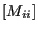
and 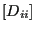
is
used in Equation (381)) in subroutine reducematrix.f. Finally, the
matrix corresponding to the left hand side is factorized. It will be
repeatedly used for solving the system in each increment.
Now, the increment loop can start. The following actions are performed:
- At the beginning of each increment the
matrix is formed. This is performed in subroutine
gencontelem_n2f.f. Each set of three columns in the matrix corresponds to the
dependence of the degrees of freedom of a slave node in a local coordinate
system (splitting the normal direction from the tangential directions) on the
degrees of freedom of the nodes of the opposite master face in global
coordinates. The matrix is stored using fields auw, jqw, iroww and
nzsw. Vector auw contains the nonzero values column by column, the
corresponding row number is stored in iroww, in total there are nzsw
entries. The first entry in each column is stored in jqw(i),
i=1,..3*nslavs+1. [for linear calculations (i.e. without geometric and
material nonlinearities; characterized by masslesslinear
 0) is calculated only once at the start of
the step.]
0) is calculated only once at the start of
the step.]
- contrary to penalty dynamic calculations, no extrapolation from the
previous result is done, i.e. prediction.c is skipped.
- contrary to penalty dynamic calculations, the stiffness matrix is
assembled in mafillsmmain.c. [For linear calculations the stiffness matrix
is calculated only once at the start of the step.]
- contrary to penalty dynamic calculations, no residual is calculated in
calcresidual.c. Instead, routine massless.c is called with the following actions:
- The rows in are rearranged; in gencontelem_n2f.f the order
is such that first the slave nodes are treated, followed by the master
nodes. In routine expand_auw the new row order is the one dictated by
field nactdof. [For linear calculations this is done only once at the
start of the step.]
- In routine extract_matrices
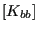
, 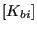
,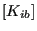
and
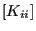
are extracted from the global stiffness matrix. Matrix
is stored using fields jqbb, aubb, adbb, irowbb and icolbb (the
latter contains the number of nonzero entries in each column), because of
symmetry only half the matrix is stored. The subdiagional terms of matrix are stored using
fields jqbi, aubi, irowbi and nzsbi. The subdiagonal terms of matrix are stored using
fields jqib, auib, irowib and nzsib. To obtain matrix it has to
be complemented by the transpose of the matrix. Notice that
matrix is assumed to have as many rows as ![$ [K]$](img1761.png) and three times
nslavs columns (any entries not belonging to the contact nodes are set to
zero; this does not blow up the storage, since only non-zeros are stored). Mutatis mutandis this also applies to . Matrix
is actually not extracted, the entries of matrices ,
and are set to zero (off-diagonal) or one
(diagonal). [For linear calculations this is done only once at the start of
the step.]
and three times
nslavs columns (any entries not belonging to the contact nodes are set to
zero; this does not blow up the storage, since only non-zeros are stored). Mutatis mutandis this also applies to . Matrix
is actually not extracted, the entries of matrices ,
and are set to zero (off-diagonal) or one
(diagonal). [For linear calculations this is done only once at the start of
the step.]
- Calculation of
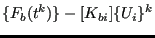
in resforccont.f. This
is the residual force due to external forces and forces from the internal
nodes in the absence of contact forces
 . For linear
calculations the external force due to distributed loads (e.g. centrifugal
forces) is calculated only once at the start of the step (only if the
distributed load does not change in the step). Concentrated loads are added
on an increment basis.
. For linear
calculations the external force due to distributed loads (e.g. centrifugal
forces) is calculated only once at the start of the step (only if the
distributed load does not change in the step). Concentrated loads are added
on an increment basis.
- factorizing (for linear calculations this is done only once
at the start of the step) and premultiplying the residual force with
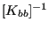
by solving a linear equation system. The result is stored
in field gapdisp and is the displacement field at the boundary nodes in
global coordinates assuming zero contact force.
- calculating the gap by premultiplying gapdisp by
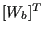
and
adding 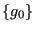
in detectactivecont.f; determining the active contact degrees of freedom by
identifying negative gap values. The number of active degrees of freedom
is nacti, the corresponding entries in iacti(j),j=1...3*nlavs are
numbered in ascending order, the nonactive degrees in iacti are set to zero.
- calculate
![$ [G]$](img1324.png) and
and  (using gapdisp) and storing them in
gmatrix(1..nacti,1..nacti) and cvec(1..nacti). For linear calculations a
maximal matrix (stored in fullgmatrix) is calculated once at the start of the
step assuming all contact degrees of freedom do be active. it is
appropriately condensed to the right size in each increment based on the
truly active degrees of freedom. In the same way a maximal relaxation vector
fullr is calculated.
(using gapdisp) and storing them in
gmatrix(1..nacti,1..nacti) and cvec(1..nacti). For linear calculations a
maximal matrix (stored in fullgmatrix) is calculated once at the start of the
step assuming all contact degrees of freedom do be active. it is
appropriately condensed to the right size in each increment based on the
truly active degrees of freedom. In the same way a maximal relaxation vector
fullr is calculated.
- solving the inclusion problem in auglag_inclusion.f. Field
alglob(1..neqtot) contains
![$ [W_b] \{ \lambda \}$](img1311.png) , i.e. the contact forces in
slave and master nodes in global coordinates, field al(1..3*nslavs)
contains
, i.e. the contact forces in
slave and master nodes in global coordinates, field al(1..3*nslavs)
contains
 , i.e. the contact forces in the slave nodes in a
local coordinate system.
, i.e. the contact forces in the slave nodes in a
local coordinate system.
- calculate
 using Equation (371).
using Equation (371).
- calculate the right hand side of Equation (381).
- Solve the equation system corresponding to Equation
(381). Since the left hand side is stored in fields adb and aub this
is covered by the regular penalty dynamic calculations and does not require
special treatment.
- Calculate a pseudo velocity in the contact boundary nodes by
calculating
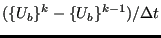
; this is needed for the
next step.
- Use routines resultsini.c and iniparll.c to calculate
 and
and
 .
.